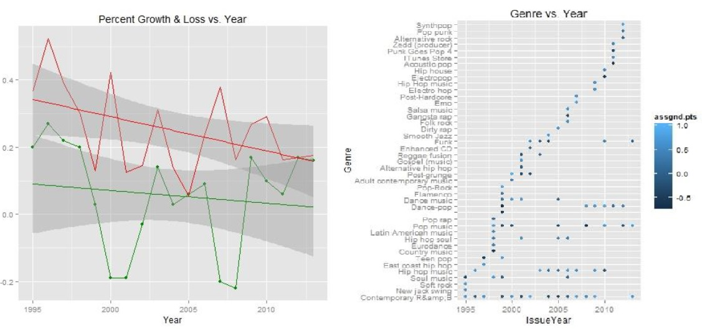

Research and Projects
Research
Presentation & Poster
A Translation Approach for Unstructured Online Reviews
Build structure on online reviews by changing topic key words in each review to the pre-assumed words by linking online dictionary and then decompose each review into several components, sentences or phrases, to include only one topic in a component. After then, each component is scored using a machine learning method. The scored data are used to analysis customers' satisfaction in terms of assumed topic dimensions.Album Recommendation System Based on Random Forest Method and Mixed Effect Model
An improved music recommendation algorithm based on the content based filtering method by introducing a new variable produced by random mixed effect model and lyric score. The new variable reflects the effect of the artist that cannot be explained by the specific variables, including genre, member composition, and internal information of the album. The lyrics score measures positivity of the words in lyrics. Then, the random forest method will be applied to estimate the review rate of the albums by using the training data based on the billboard chart
Estimate the trend of social atmosphere in the US by examining popular songs played over
This study examines the estimation the trend of social atmosphere in the US using of data mining techniques, especially text mining. Data mining techniques has played an important role in many fields such as marketing, retail, finance, manufacture because handling and storage of huge data has become possible with the development of information and technique. From the songs' lyrics, there is positive or negative meaning difference among years and singers. Key words: Lyrics, Singer, Song, Billboard, Random Number Simulation.Projects

Emoji
Emoji is an R package.